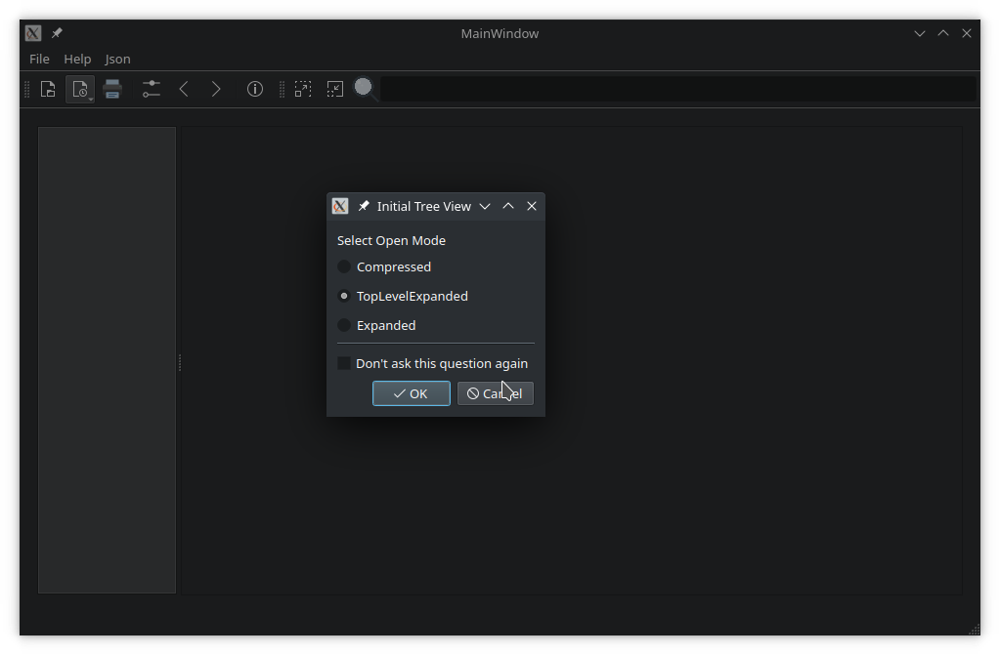

Document Viewer
A Widgets application to display and print JSON, text, and PDF files.
Document Viewer demonstrates how to use a QMainWindow with static and dynamic toolbars, menus, and actions. Additionally, it demonstrates the following features in widget-based applications:
- Using QSettings to query and save user preferences, and managing previously opened file history.
- Controlling cursor behavior when hovering over widgets.
- Creating dynamically loaded plugins.

Creating an application and the main window
The application and its main window is constructed in main.cpp. The main() function uses QCommandLineParser to process command line arguments – help, version, and an optional positional argument, file. If the user provided a path to a file when launching the application, the main window opens it:
int main(int argc, char *argv[]) { QApplication app(argc, argv); QCoreApplication::setOrganizationName("QtProject"_L1); QCoreApplication::setApplicationName("DocumentViewer"_L1); QCoreApplication::setApplicationVersion("1.0"_L1); QCommandLineParser parser; parser.setApplicationDescription(QApplication::translate("main", "A viewer for JSON, PDF and text files")); parser.addHelpOption(); parser.addVersionOption(); parser.addPositionalArgument("File"_L1, QApplication::translate("main", "JSON, PDF or text file to open")); parser.process(app); const QStringList &positionalArguments = parser.positionalArguments(); const QString &fileName = (positionalArguments.count() > 0) ? positionalArguments.at(0) : QString(); MainWindow w; w.show(); if (!fileName.isEmpty()) w.openFile(fileName); return app.exec(); }
MainWindow class
The MainWindow class provides an application screen with menus, actions, and a toolbar. It can open a file, automatically detecting its content type. It also maintains a list of previously opened files, using QSettings to store and reload settings when launched. The MainWindow creates a suitable viewer for the opened file, based on its content type, and provides support for printing a document.
MainWindow's constructor initializes the user interface created in Qt Designer. The mainwindow.ui file provides a QTabWidget on the left, showing bookmarks and thumbnails. On the right, there is a QScrollArea for viewing file content.
ViewerFactory class
The ViewerFactory class manages viewers for known file types. These viewers are implemented as plugins. When an instance of a ViewerFactory is created, pointers to the view area and the main window are passed to the constructor:
m_factory.reset(new ViewerFactory(ui->viewArea, this));
ViewerFactory loads all available plugins on construction. It provides a public API to query the loaded plugins, their names, and supported MIME types:
using ViewerList = QList<AbstractViewer *>;
QStringList viewerNames(bool showDefault = false) const;
ViewerList viewers() const;
AbstractViewer *findViewer(const QString &viewerName) const;
AbstractViewer *defaultViewer() const;
QStringList supportedMimeTypes() const;
The viewer() function returns a pointer to the plugin suitable to open the QFile passed as an argument:
m_viewer = m_factory->viewer(file);
If the application settings contain a section for the viewer, it's passed to the viewer's virtual restoreState() function:
void MainWindow::restoreViewerSettings() { if (!m_viewer) return; QSettings settings; settings.beginGroup(settingsViewers); QByteArray viewerSettings = settings.value(m_viewer->viewerName(), QByteArray()).toByteArray(); settings.endGroup(); if (!viewerSettings.isEmpty()) m_viewer->restoreState(viewerSettings); }
Then, the standard UI assets are passed to the viewer and the main scroll area is set to show the viewer's display widget:
m_viewer->initViewer(ui->actionBack, ui->actionForward, ui->menuHelp->menuAction(), ui->tabWidget);
restoreViewerSettings();
ui->scrollArea->setWidget(m_viewer->widget());
return true;
}
AbstractViewer class
AbstractViewer provides a generalized API to view, save, and print a document. Properties of both the document and the viewer can be queried:
- Does the document have content?
- Has it been modified?
- Is an overview (thumbnails or bookmarks) supported?
AbstractViewer provides protected methods for derived classes to create actions and menus on the main window. In order to display these assets on the main window, they are parented to it. AbstractViewer is responsible for removing and destroying the UI assets it creates. It inherits from QObject to implement signals and slots.
Signals
void uiInitialized();
This signal is emitted after a viewer receives all necessary information about UI assets on the main window.
void printingEnabledChanged(bool enabled);
This signal is emitted when document printing is either enabled or disabled. This happens after a new document was successfully loaded, or, for example, all content was removed.
void printStatusChanged(AbstractViewer::PrintStatus status);
After starting the printing process, this signal notifies about changes in its progress.
void documentLoaded(const QString &fileName);
This signal notifies the application that a document was successfully loaded.
TxtViewer class
TxtViewer is a simple text viewer, inheriting from AbstractViewer. It supports editing text files, copy/cut and paste, printing, and saving changes.
JsonViewer class
JsonViewer displays a JSON file in a QTreeView. Internally, it loads the contents of a file into a QJsonDocument and uses it to populate a custom tree model with JsonItemModel.
The JSON viewer plugin demonstrates how to implement a custom item model inherited from QAbstractItemModel. The JsonTreeItem class provides a basic API for manipulating JSON data and propagating it back to the underlying QJsonDocument.
JsonViewer uses the top-level objects of the document as bookmarks for navigation. Other nodes (keys and values) can be added as additional bookmarks, or removed from the bookmark list. A QLineEdit is used as a search field to navigate through the JSON tree.
PdfViewer class
The PdfViewer class (and plugin) is a fork of the PDF Viewer Widget Example. It demonstrates the use of QScroller to smoothly flick through a document.
Other relevant classes
HoverWatcher class
The HoverWatcher class sets an override cursor when hovering the mouse over a widget, restoring it upon departure. To prevent multiple HoverWatcher instances being created for the same widget, it is implemented as a singleton per widget.
HoverWatcher inherits from QObject and takes the QWidget it watches as the instance's parent. It installs an event filter to intercept hover events without consuming them:
HoverWatcher::HoverWatcher(QWidget *watched) : QObject(watched), m_watched(watched) { Q_ASSERT(watched); m_cursorShapes[Entered].emplace(Qt::OpenHandCursor); m_cursorShapes[MousePress].emplace(Qt::ClosedHandCursor); m_cursorShapes[MouseRelease].emplace(Qt::OpenHandCursor); // no default for Left => restore override cursor m_watched->installEventFilter(this); }
The HoverAction enum lists the actions that HoverWatcher reacts to:
enum HoverAction {
Entered,
MousePress,
MouseRelease,
Left,
Ignore
};
Static functions create watchers, check their existence for a specific QWidget, or dismiss a watcher:
static HoverWatcher *watcher(QWidget *watched);
static const HoverWatcher *watcher(const QWidget *watched);
static bool hasWatcher(QWidget *widget);
static void dismiss(QWidget *watched);
A cursor shape can be set or unset for each HoverAction. If there is no associated cursor shape, the application's override cursor is restored when the action is triggered.
public slots: void setCursorShape(HoverAction type, Qt::CursorShape shape); void unSetCursorShape(HoverAction type);
The mouseButtons property holds the mouse buttons to consider for a MousePress action:
void setMouseButtons(Qt::MouseButtons buttons);
void setMouseButton(Qt::MouseButton button, bool enable);
Action-specific signals are emitted after processing an action:
signals: void entered(); void mousePressed(); void mouseReleased(); void left();
A general signal is emitted which passes the processed action as an argument:
void hoverAction(HoverAction action);
RecentFiles class
RecentFiles is a QStringList that is specialized to manage a list of recently opened files.
RecentFiles has slots to add either a single file or multiple files in one go. An entry is added to the list of recent files if the path points to a file that exists and can be opened. If a file is already in the list, it is removed from its original position and added to the top.
public slots: void addFile(const QString &fileName) { addFile(fileName, EmitPolicy::EmitWhenChanged); } void addFiles(const QStringList &fileNames);
Files are removed from the list either by name or by index:
void removeFile(const QString &fileName) { removeFile(m_files.indexOf(fileName)); }
void removeFile(qsizetype index) {removeFile(index, RemoveReason::Other); }
Slots that implement saving and restoring from QSettings:
void saveSettings(QSettings &settings, const QString &key) const;
bool restoreFromSettings(QSettings &settings, const QString &key);
When restoring settings, nonexistent files are ignored. The maxFiles property holds the maximum amount of recent files to store (default is 10).
qsizetype maxFiles();
void setMaxFiles(qsizetype maxFiles);
RecentFiles verifies that a file can be read before accepting it.
RecentFileMenu class
RecentFileMenu is a QMenu, specialized to display a RecentFiles object as a submenu.
Its constructor takes a pointer to a parent QObject and a pointer to a RecentFiles object, the content of which it will visualize. Its fileOpened() signal, triggered when the user selects a recent file from the list, passes the absolute path to the file as an argument.
Note: RecentFileMenu is destroyed either by its parent widget, or by the RecentFiles object passed to its constructor.
class RecentFileMenu : public QMenu { Q_OBJECT public: explicit RecentFileMenu(QWidget *parent, RecentFiles *recent); signals: void fileOpened(const QString &fileName); ... };